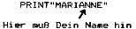

Nascom Journal |
Juli/August 1982 · Ausgabe 7/8 |
Auch ich habe in ELCOMP diese beiden Artikel für die Kinder gelesen und sie für sehr gut gehalten. Deshalb habe ich sie bearbeitet und sie dabei meinem ABC-80 angepasst. Einen Abdruck davon finden Sie in der Anlage.
Die Entteuschung war jedoch sehr groß. Von etwa 15 Kindern (aus der Nachbarschaft) hat nicht eines auch nur einen einzigen Programmierversuch unternommen. Dabei kommen sie fast nur, um bei einigen Spielchen auf der Tastatur herumhacken zu können.
Neben den Spielen habe ich auch je ein einfaches Programm zum Üben der Grundrechenarten und des Alphabetes geschrieben (Abdrucke in der Anlage) Diese Programme werden allerdings oft genug freiwillig angewendet. Die Freiwilligkeit ist dadurch gesichert, daß die meisten Kinder selbstständig dazu in der Lage sind, Programme von der Cassette zu laden und zu starten. Auf die Auswahl der Cassette nehme ich keinen Einfluß.
Es ist also nicht so, daß die Kinder Angst vor dem Computer haben, Es ist wohl auch nicht die Angst vor dem Nachdenken, denn es werden auch durchaus ‚schwierigere‘ Spiele ausgewählt. Auch unterbinde ich kein ‚unsinniges‘ Herumtippen auf der Tastatur. Auch sonst bin ich nicht ‚lehrerhaft‘ oder ‚streng‘ oder ‚kleinlich‘. Ich bekomme einfach nicht heraus, warum die Kinder nicht programmieren wollen.
Vielleicht würde das (wenigstens vorrübergehend) anders, wenn man das Interesse durch einen Wettkampf beleben würde.
Liebe Kinder!
Wollen wir mal den Computer ausprobieren? Es ist ganz bestimmt nicht so schwer wie Ihr glaubt.
Als erstes schreiben wir jetzt einmal unseren Namen in den Computer und sehen einmal nach, was der Computer dazu meint. Wenn Du Deinen Namen geschrieben hast, dann mußt Du die Taste ENTER drücken. Diese Taste ist rechts im Tastenfeld zu finden.
Wenn der Computer jetzt irgendetwas ausdruckt (zum Beispiel SNERROR)so ist dies eine Fehlermeldung und bedeutet, daß der Computer jetzt nicht verstanden hat, was Du gerade eingetippt hast. Denn er kann selbst nicht denken und darum auch nicht wissen, was Du gedacht hast.
Jetzt wollen wir ihm einmal etwas eingeben, was er sicher versteht.
Nachdem Du diese Buchstaben eingegeben hast, drückst Du wieder die Taste ENTER. Was macht der Computer jetzt? Jetzt versteht er Dich und schreibt Deinen Namen. Und dann schreibt er OK und der blinkende Funkt (Cursor genannt) zeigt an, daß er auf eine neue Aufgabe wartet. Versuche das Gleiche mit den Namen deiner Freunde und Bekannten.
Unser nächstes Spiel soll folgendes sein. Gib mal den folgenden Text ein:
10 PRINT "MARIANNE" 20 GOTO 10 RUN
Nach jeder Zeile die Taste RETURN drücken!!
Das war Dein erstes Programm. Es ist so klein und einfach. Aber siehe einmal, was es nicht schon alles macht. Es füllt die linke Hälfte des Bildschirmes mit Deinem Namen. „Natürlich aber nur dann, wenn Du statt Marianne Deinen Namen eingesetzt hast.
Der Computer ist jetzt beschäftigt und es sieht so aus, als wolle er nie wieder damit aufhören. Aber das haben wir gleich.
Suche rechts die Taste SHIFT und drücke Sie gleichzeitig mit der ENTER-Taste. Nun meldet sich der Computer mit „Break“, das heißt Unterbrechung, und der Nummer der Zeile, in der er das Programm beendet hat.
Gebe LIST ein und drücke wieder die Taste ENTER. Jetzt kannst Du Dein Werk wieder einmal ansehen. Probiere jetzt auch andere Namen aus. Ändern kannst Du das Programm auf zwei Arten. Entweder schreibt man die ganze Zeile neu (schreibt also 10 PRINT "HANS" oder man tippt LIST10 ein und drückt RETURN. Der Computer schreibt nun die Zeile, die wir ändern wollen. Mit der Taste ‚Pfeil nach rechts‘ gehen wir nach recht, bis in der neuen Zeile 10 PRINT" steht. Sind wir aus Versehen zu weit gegangen, so können wir mit der anderen Pfeiltaste auch wieder zurückgehen.
Wenn also nur 10 PRINT" dort steht, kann ein neuer Name geschrieben werden. Jetzt wieder die Taste ENTER, dann RUN und wieder ENTER
Weißt Du noch, wie man den Computer stoppt?
( SHIFT+ENTER )
Nun schreibe wieder in Zeile 10 Deinen Namen. Aber bevor Du die Taste ENTER drückst, schreibe schreibe hinter das letzte Anführungszeichen nach das Zeichen ; und dann erst ENTER und dann Starten. Was ist denn jetzt los? Er schreibt deinen Name immer hintereinander bis die Bildschirmzeile voll ist und macht dann in der nächsten Zeile weiter. Und das ohne Pause immer weiter. Versuche das Gleiche auch mit anderen Namen. Achte aber darauf, daß der Strichpunkt ; stets am Ende der Zeile 10 steht.
wird fortgesetzt.
| Seite 27 von 60 |
|---|